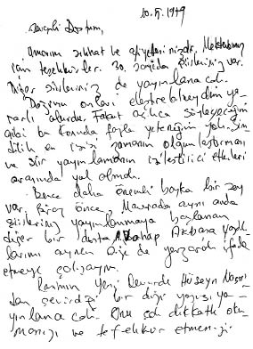
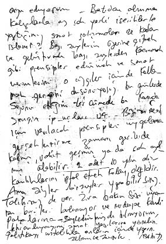

10.5.1979
Sevgili Dostum,
Umarım sıhhat ve afiyettesinizdir. Mektubun için teşekkürler. 30. sayıda şiirleriniz var. Diğer şiirleriniz de yayımlanacak.
Doğrusu onları eleştirebilseydim yararlı olurdu. Fakat açıkça söyleyeceğim gibi bu konuda fazla yeteneğim yok. Şimdilik en iyisi zamanın olgunlaştırması ve şiir yayımlamanın iyileştirici etkileri arasında yol almak.
Bence daha önemli başka bir şey var. Biraz önce, Mavera’da aynı anda şiirleriniz yayımlanmaya başlanan diğer bir dosta, A. Vahap Akbaş’a yazdıklarımı aynen size de yazarak ifade etmeye çalışayım.
Rasim’in Yeni Devir’deki Hüseyin Nasr’dan çevirdiği bir dizi yazısı yayımlanacak. Onu çok dikkatli okumanızı ve tefekkür etmenizi arzu ediyorum. Batı’dan alınma kalıplarla az çok yerli içeriklerle yaptığımız sanat çalışmaları ne kadar İslami? Bazı şeylerin üzerine gitmek ve geliştirmek, bazı şeylerden kaçınmak gibi prensipler edinmek ve sanat verimlerini o çizgiler içinde kollamak gereğini düşünüyoruz bu günlerde. Sözünü ettiğim tercümede bu konuda zengin ipuçları var. Bizim nesil için varılacak prensipleri uygulama ve gerçekleştirme zamanı gerilerde kalmış, vakit geçmiş ya da çok azalmış olabilir. 2 adet 10 yılın alışkanlıklarını iptal etmek kolay değildir. Ama sizler bir şeyler yapabilirsiniz. Talihiniz de var. Zira bakın sizi uyaran birileri bulunuyor ve söyledim mi bilmiyorum, tekrarlayayım, sanat yazılarına yönelin. Politikayı ustalıkla onların içinde yapın.
Selam ve sevgiler.
Cahit